v6.1｜2026-10-12 共 30 頁，往下捲動瀏覽
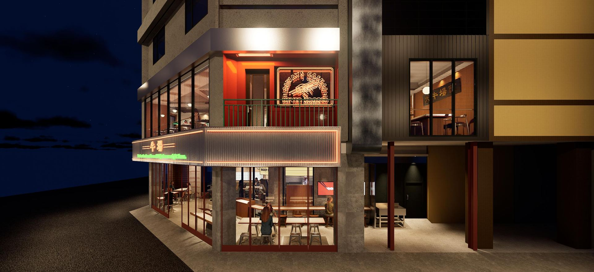
版本 v6.1｜2026-10-12
BEEF LAB · TAICHUNG
品牌定位與 Slogan ／ 摩登復古拍攝 ／ KOL・KOC 與部落客 SEO
02
牛場三大核心
01 · POSITIONING
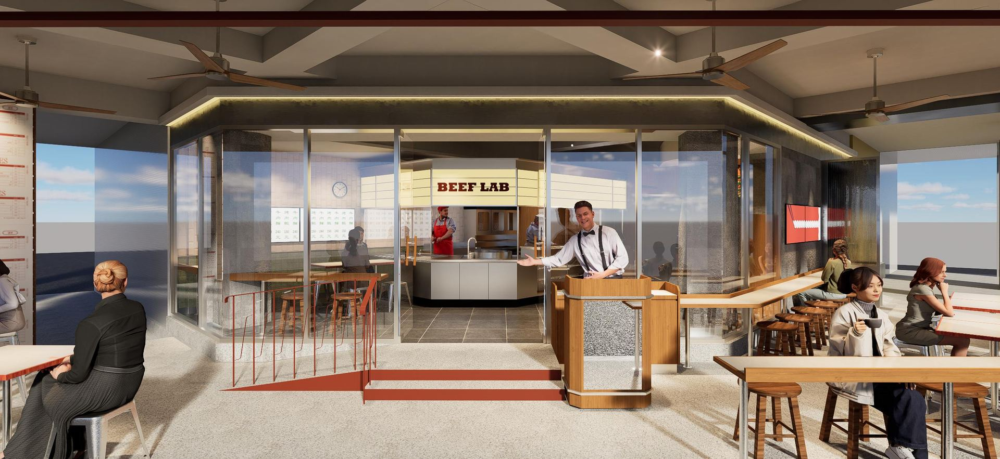
牛肉麵
推門先看到 BEEF LAB 吧檯裡師傅在煮湯。牛骨、蘋果、洋蔥、蘿蔔每天現熬，不用粉包。
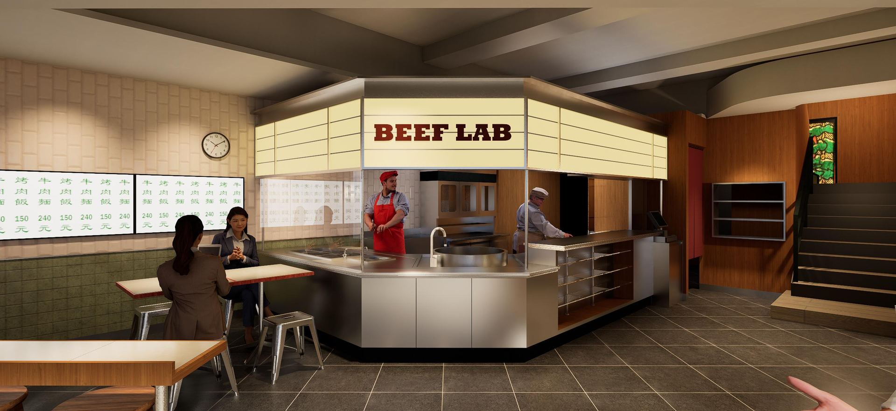
燒肉飯
豬五花用炭火烤，吃得到炭香；骰子牛修掉筋，中小火鎖住肉汁；每份燒肉都加特製蒜片。
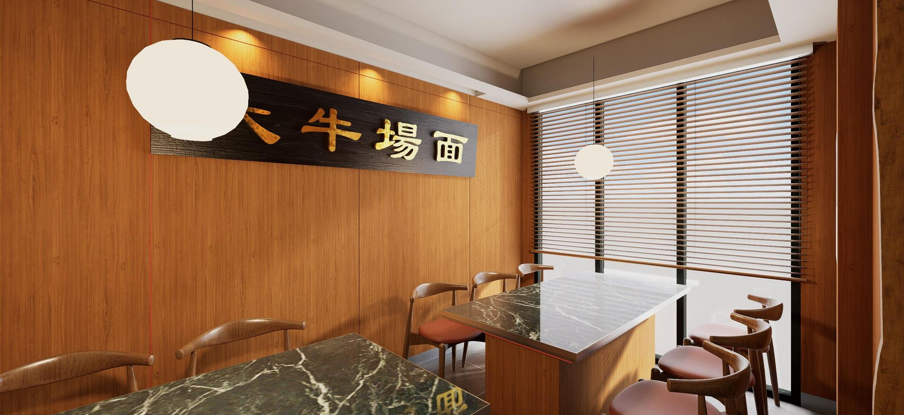
場面與價錢
轉角兩層樓、霓虹招牌，摩登復古的風格，在勤美只要兩百多就能擁有。
03
01 · POSITIONING
對誰說
在勤美、草悟道逛街吃飯的年輕人，和附近的上班族，想坐在好看的店裡，但不想替裝潢多付錢的人。
我們是
一間看得見功夫的牛肉麵與燒肉飯餐館：牛肉全球牧場直送，湯在門口熬，肉在炭火上烤。
憑什麼
牛肉全球牧場直送；開放吧檯現熬現烤；摩登復古的兩層樓空間；在勤美只要兩百多就能擁有這樣品質與氣氛。
一句話
看得見的鮮湯，聽得到的炭火
牛場 BEEF LAB｜行銷策略規劃
04
02 · SLOGAN
| 手法 | 品牌的說法 | 牛場可以借的寫法 |
|---|---|---|
| 數字和頻率 | 八合里海記：每日三宰三配，屠宰到上桌最快 1 小時 | 全球 [__] 國牧場直送；湯每日現熬 [__] 小時 |
| 用「不」做承諾 | 一頭牛：當天現宰、現點現切，不冷凍、不注水 | 不靠粉包；不賣隔夜湯 |
| 食材配手藝 | 費大廚：精選黑豬肉，專業大廚炒 | 全球牧場的牛，門口的湯 |
| 空間配食物 | 和府撈麵：把「書房」和一碗湯麵寫進同一句口號 | 大牛場面，一碗好湯 |
| 只講一個招牌 | 巴奴：服務不是巴奴的特色，毛肚和菌湯才是 | 招牌只講兩樣：牛肉麵、炭火燒肉飯 |
資料來源：36氪、界面新聞、數英網等中國餐飲報導
05
02 · SLOGAN
主句｜已確認
後院有座牛場，全球牧場直送
次概念
後院就是牛場，全球牧場低溫直送
招牌四字版
主句的短版。用在霓虹、燈箱、直書字卡。
概念版
解釋「後院」：全球牧場的牛肉低溫直送進來，後院就是牛場。
口語版
給創作者口播用。
「直送」和「牧場」都要拿得出佐證：進口文件或供應商資料。不再使用「每天直送」「現宰」「溫體」這類說法。
06
02 · SLOGAN
每道牛肉旁標出國家與部位。依規定餐廳本來就要標示牛肉原產地，把它做成賣點。
在店內或菜單首頁放一張世界地圖，標出牛肉來自哪些牧場。［牧場名單待補］
用一張表說清楚：哪個產地的牛，用在哪道菜。例如和牛用在手沖牛肉麵和雪花起司燒肉飯。
官方帳號每週介紹一個產地或部位。創作者到店時，由店長口頭說明一次。
「後院」從店後面換成全世界的牧場。客人要能在菜單、牆面和內容裡，自己看到產地。
07
02 · SLOGAN
一句話講完一麵一飯，湯在門口的開放吧檯熬，推門就看得見；燒肉在炭火上烤，坐下就聽得到！
08
02 · SLOGAN
牛肉麵・門口的湯鍋
看得見的鮮湯
推門第一眼就是師傅在煮湯，牛骨、蘋果、洋蔥、蘿蔔
每天現熬，絕不用粉包！
燒肉飯・炭火烤台
聽得到的炭火
豬五花在炭火上烤，油滴下去有聲音；
骰子牛修筋、中小火鎖汁、最後撒上特製蒜片。
09
02 · SLOGAN
豬五花
用炭火烤，吃得到炭香，搭特調燒肉醬的日式口感。
骰子牛
特別把筋修掉，中小火慢烤，鎖住肉汁，口感更嫩。
特製蒜片
每一份燒肉都加，是收尾的那一下。
10
02 · MENU
| 品項 | 記憶點 | 行銷角色 |
|---|---|---|
| 仙氣牛膝骨清燉牛肉麵 | 牛膝骨的膠原蛋白，叫它「仙氣」 | 排面款：開場畫面與合照主角 |
| 牛場經典清燉牛肉麵 | 牛腱、牛臉頰、牛肚、牛筋都有的滿漢款 | 主力款：第一次介紹就講這碗 |
| 半筋半肉清燉牛肉麵 | 平價帶路款，第一次來先點這碗 | 導流款：接「兩百多」價格句 |
| A5 和牛手沖牛肉麵 | 像台南牛肉湯，自己動手沖湯 | 話題款：手沖過程拍成短影音 |
| 今天單身臭豆腐鴨血麻辣牛肉麵 | 麻辣鴨血加臭豆腐和牛腱 | 話題款：品名直接當貼文標題 |
| 順化皇城牛肉河粉 | 越式命名的河粉，一樣是滿漢配料 | 延伸款：呼應「全球」的菜單線 |
麵 LAB 可以客製：選麵體、加麵加肉，再到就醬吧自己調醬。菜單由必比登推薦的牛肉麵師傅協助開發［姓名與能否公開待確認］。
11
02 · MENU
| 品項 | 記憶點 | 行銷角色 |
|---|---|---|
| 月見雪花起司和牛燒肉飯 | A5 和牛、起司絲像下雪、兩顆生蛋黃 | 排面款：刨起司的瞬間必拍 |
| 大山牛五花燒肉飯 | 牛五花鋪成一座山，份量很滿 | 排面款：側拍拍出高度 |
| 月見骰子嫩肩牛燒肉飯 | 修過筋的骰子牛，口感更嫩 | 主力款：接「炭火現烤、蒜片點睛」 |
| 秘傳牛三寶燒肉飯 | 牛腱、牛筋、牛肚先滷再烤，吃得到原肉塊 | 特色款：講「先滷再烤」的工序 |
| 炭燒豬五花燒肉飯 | 炭火烤出炭香，不吃牛也能點 | 安心款：同桌有人不吃牛 |
| 好大厚切炸雞排（小菜） | 兩個人分一份的份量 | 加點款：聚餐桌上的話題 |
燒肉 LAB 每份都附湯。標示「A5 和牛」的品項，品名要和實際肉源一致：菜單大綱的備註另外寫到 F1 和牛。
12
02 · SLOGAN
| 層級 | 文案 | 用在哪 |
|---|---|---|
| 品牌主張 | 後院有座牛場，全球牧場直送 | 門面、品牌影片開場、菜單首頁的產地頁 |
| 次概念 | 後院就是牛場，全球牧場低溫直送 | 品牌故事、產地介紹、創作者口播 |
| 傳播主標 | 看得見的鮮湯，聽得到的炭火 | 開幕主視覺、KOL 內容、廣告 |
| 牛肉麵短句 | 門一開、湯正滾 | 玻璃門、吧檯燈箱旁、湯鍋鏡頭的字卡 |
| 燒肉飯短句 | 炭火現烤、蒜片點睛 | 烤台、燒肉飯品項、短影音字卡 |
| 場面句 | 小聚，也有大牛場面 | 二樓包廂與長桌、聚餐情境的貼文、匾額打卡點 |
| 價格句 | 兩百多就能擁有這個「大牛場面」 | 內容結尾、霓虹打卡點、Hashtag |
13
02 · SLOGAN
1
霓虹亮燈、
推門、「大牛場面」匾額。
2
門口的湯鍋、炭火上的豬五花、撒蒜片的那一瞬間。
3
帳單或菜單上的數字。到這一步才說「兩百多」。
品牌自己說
全球牧場直送、看得見的鮮湯、聽得到的炭火
一份兩百多，值得你每週都來一碗。
留給客人說
便宜、平價、CP 值，這些詞讓品牌講會把場面拉低，由客人講才是驚喜。
14
03 · MODERN RETRO
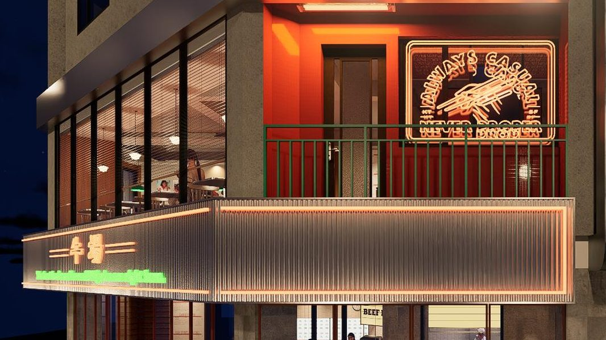
外觀
新舊混搭：老派霓虹字配透光浪板、二樓紅牆綠欄杆的陽台。
怎麼拍：亮燈後站對街斜角，招牌和陽台霓虹同框；趁天色還帶一點藍的時候拍。
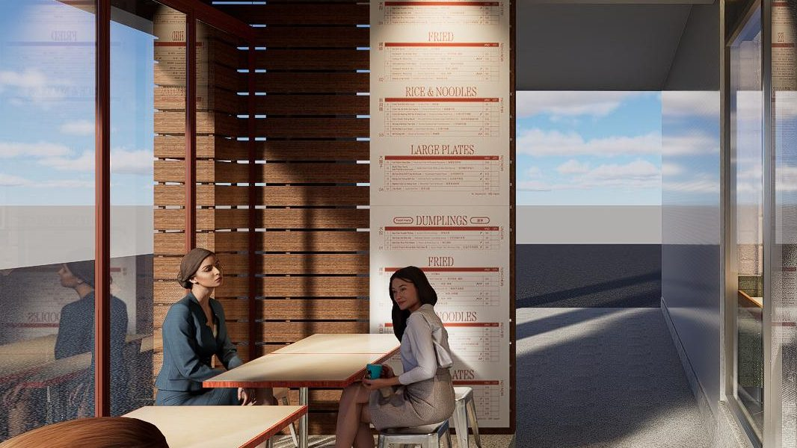
騎樓
新舊混搭：鐵凳、木桌、吊扇，和一整面直立的大菜單。
怎麼拍：順著騎樓拍出縱深，前景留一桌客人；白天用自然光，不必補燈。
入口
新舊混搭：木作帶位台、紅色鐵件欄杆、門後的 BEEF LAB 燈箱。
怎麼拍：正對大門平拍、門框置中；接第一人稱推門，鏡頭直接進到湯鍋。
15
03 · MODERN RETRO
一樓
新舊混搭：奶油色格狀燈箱、不鏽鋼檯面、門口的大湯鍋。
怎麼拍：燈箱字和湯鍋同框，蒸氣要拍到；師傅舀湯、烤肉時拍手部特寫。
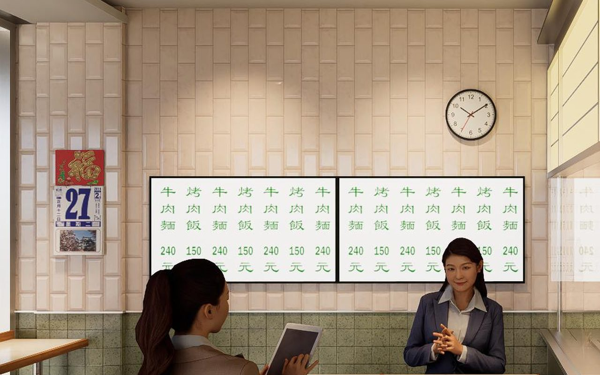
一樓
新舊混搭：撕頁日曆、圓掛鐘、綠字直書價目表、直貼磁磚牆。
怎麼拍：坐在牆前拍人像或一碗麵，背景帶到日曆和價目表；正面平拍，畫面保持乾淨。
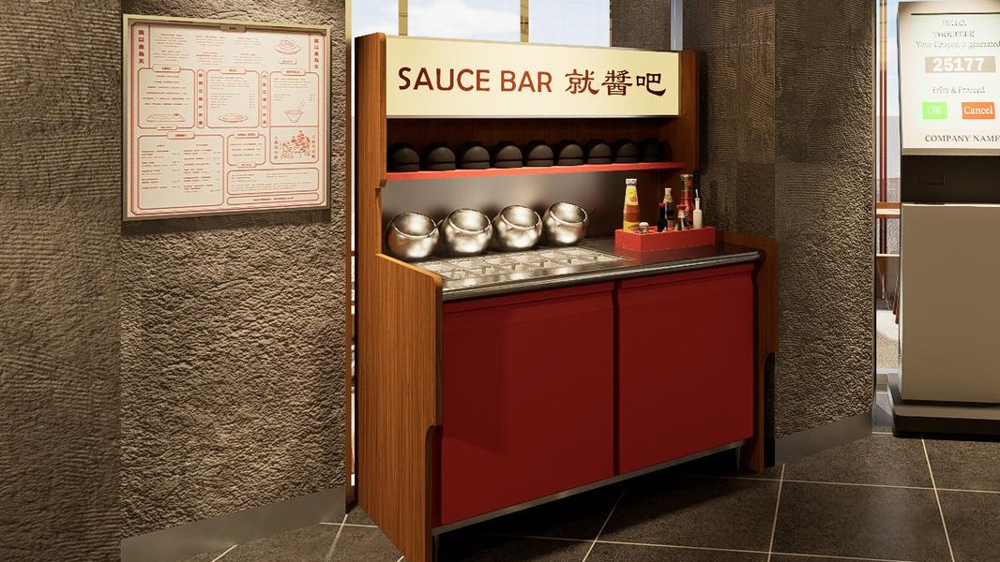
一樓
新舊混搭：手寫字燈箱、紅色櫃體、一排鋼碗和醬料瓶。
怎麼拍：俯拍調醬的手和鋼碗，再拉遠帶到燈箱字；適合拍自己的調法。
16
03 · MODERN RETRO
二樓
新舊混搭：黑底金字木匾、木牆、圓球吊燈、大理石桌。
怎麼拍：一桌菜擺滿，鏡頭由桌面抬到匾額；合照時讓匾額落在頭頂上方。
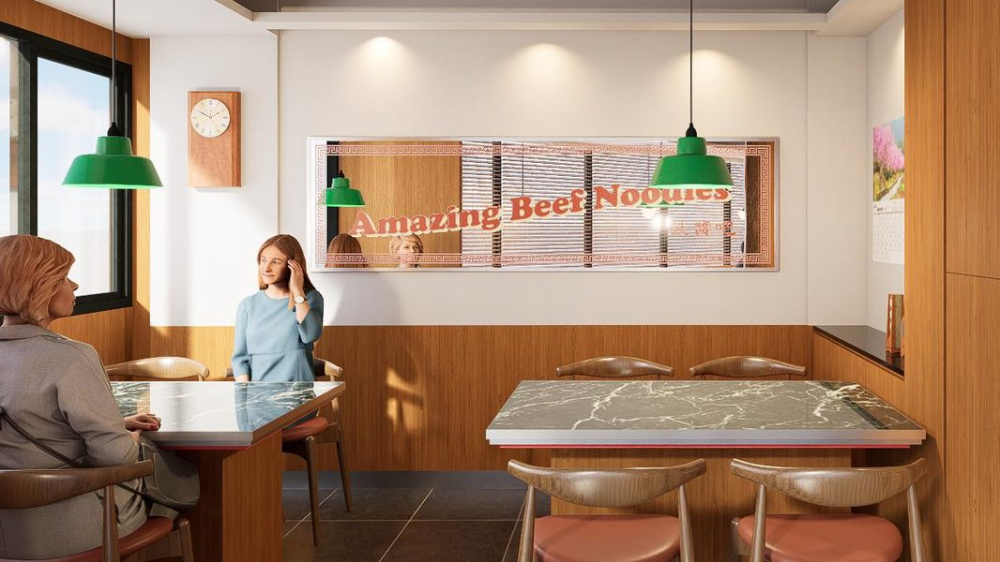
二樓
新舊混搭：紅字鏡面、綠色吊燈、掛鐘、木百葉。
怎麼拍：對著鏡子拍，鏡面字、吊燈和自己同框；不要開閃光燈。
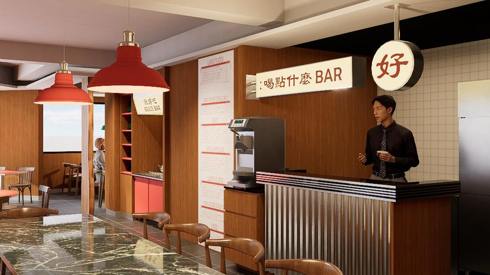
二樓
新舊混搭：鐵殼招牌、「好」字圓燈、紅色吊燈、浪板吧檯。
怎麼拍：從長桌尾端拍向吧檯，紅吊燈當前景；拿到飲料後在「好」字燈下拍手持。
17
03 · MODERN RETRO
時段
霓虹亮了、天還沒全黑的那段時間，招牌字最清楚。
構圖
乾淨、對稱，像雜誌版面。每張都帶到一個字：招牌、匾額或價目表。
光線
霓虹和吊燈當主光，不補白光；膚色偏暖是對的。
顏色
暖色配金屬的冷光，是摩登的那一半。後製不要泛黃。
道具與人
桌上的東西都入鏡。人物拍動作：夾麵、舀湯、推門。
畫幅
復古感交給空間，不加重顆粒和泛黃濾鏡。字卡用直書紅字。
18
03 · MODERN RETRO
店裡現成的線索：日曆、掛鐘、直書價目表。
畫面
夜拍為主，霓虹當主光。畫面保持乾淨銳利，不加泛黃濾鏡，料理特寫要清楚。
字卡
直書、紅字、明體，版面留白。一張字卡只放一句話。
聲音
選復古曲風的新編曲，用平台授權曲庫；保留現場的湯滾聲與炭火聲。
語氣
短句、對仗：「門一開、湯正滾」「炭火現烤、蒜片點睛」。俐落、體面，不裝老。
19
03 · MODERN RETRO
洪一峰〈舊情綿綿〉 配點燈與夜景
洪一峰〈淡水暮色〉 配天色暗下來的轉場
文夏〈黃昏的故鄉〉 配長桌聚餐的段落
文夏〈媽媽請你也保重〉 配上菜
紫薇〈綠島小夜曲〉 配空間巡禮
姚蘇蓉〈今天不回家〉 節奏明快，配猜價格
Meta Sound Collection：Meta 的免版稅曲庫，可用在 Reels 與限動；要下廣告前再確認條款。
YouTube 音效庫：免費曲庫，留意各曲的標示要求。
搜尋關鍵字：city pop、retro funk、disco、lounge、cha cha、mambo。
左邊的老歌仍有著作權，品牌帳號與合作內容不能直接配原曲，只當作聽感參考；要用原曲需另談授權。
20
04 · KOL / KOC
| 角色 | 找誰 | 任務 | 交付 |
|---|---|---|---|
| 定調者 KOL | 生活感、情境短劇的大創作者，2–3 位 | 拍亮燈、湯鍋與烤台，立住看得見的功夫 | Reels 1 支，開幕前上線 |
| 引爆者 KOL | 美食類、台中在地大帳號，3–5 位 | 拍推門見湯與炭火聲，結尾亮帳單做價格反轉 | Reels 1 支＋限動 3 則，開幕後三週內 |
| 見證者 KOC | 台中學生、上班族、在地吃貨，20–30 位 | 用自己的帳單和吃法，證明真的兩百多 | Reels 或 Threads 1 則＋Google 評論 |
| 在地放大 | 台中地方社群、商圈相關帳號 | 轉發前三層的內容，補上地點與營業資訊 | 轉載已授權素材 |
人數為建議值，依預算調整
21
04 · KOL / KOC
給官方帳號與定調者
從天色暗下來拍到霓虹亮起，一鏡到底。字卡直書：大牛場面，歡迎光臨。
給所有創作者
第一人稱推門，鏡頭直接撞見師傅在煮湯。牛骨、蘋果、洋蔥、蘿蔔都要入鏡。
給所有創作者
炭火上的豬五花與骰子牛，油滴下去的聲音，最後撒蒜片。收音優先。
給定調者
照拍攝地圖走一遍：霓虹、吧檯、價目表牆、匾額、鏡面字，每個角落拍三秒。
給引爆者與見證者
一桌菜上齊，問「這樣一餐你猜多少」，結尾亮帳單，字卡用價格句。
給官方帳號
這塊肉從哪來：一次介紹一個產地、一個部位、用在哪道菜。產地確認後再拍。
牛場 BEEF LAB｜行銷策略規劃
22
04 · KOL / KOC
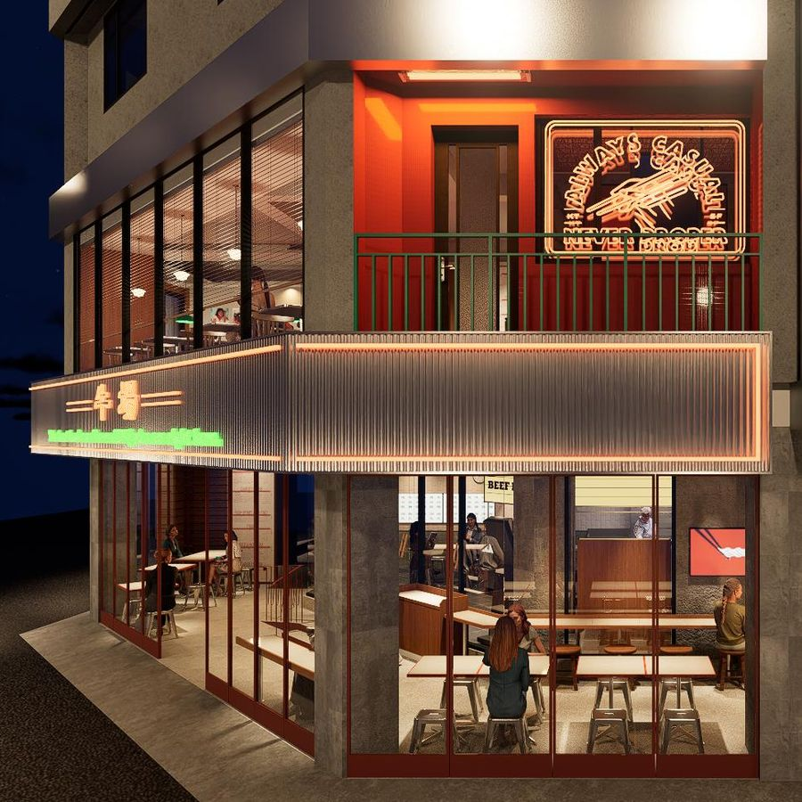
亮燈後從對街拍，招牌、浪板反光和二樓陽台霓虹同框。
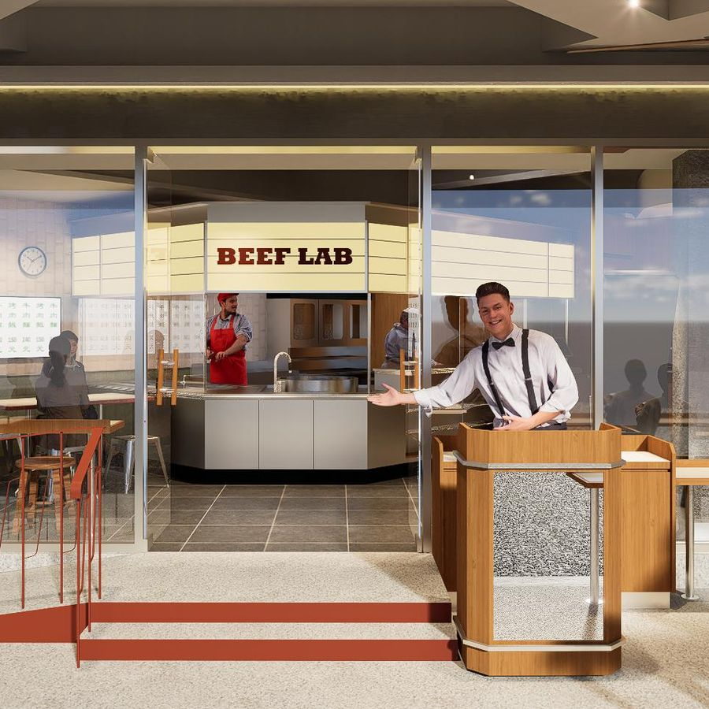
第一人稱推門進場，第一眼就是師傅在煮湯。
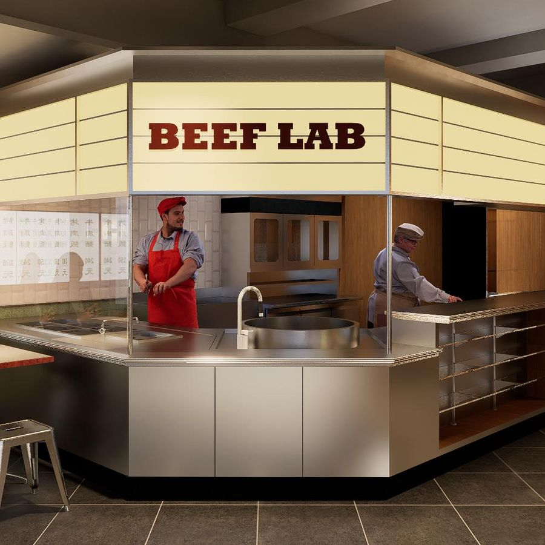
燈箱下的湯鍋與炭火烤台，拍師傅的手。
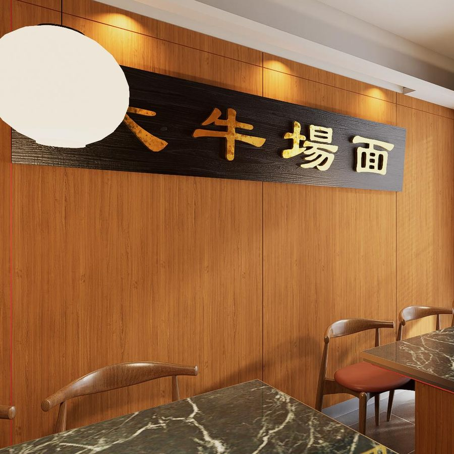
二樓匾額下擺滿一桌菜，拍出請客的排場。
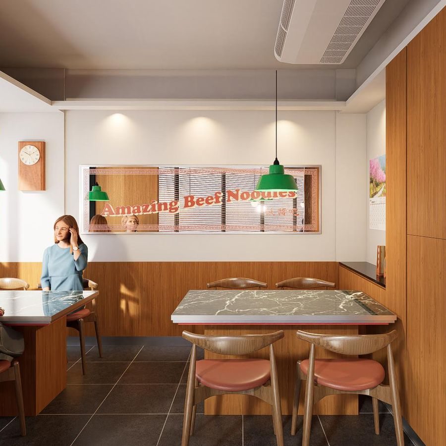
紅字鏡面配綠色吊燈，適合自拍與合照。
圖：空間設計模擬圖（川彡志作）
23
05 · CREATOR GUIDE
故事線：全球牧場送、湯在面前熬、肉在炭上烤，兩百多就能擁有這個「大牛場面」。
1
牛肉來自全球牧場，每道菜講得出產地。［產地確認後，補上國家與牧場］
2
推門就看得見師傅煮湯。牛骨、蘋果、洋蔥、蘿蔔，每天新鮮現熬，不用粉包調味。
3
豬五花用炭火烤，有炭香，搭特調燒肉醬。骰子牛修掉筋，中小火鎖住肉汁。每份都加特製蒜片。
4
放在內容最後講，搭配帳單或菜單畫面。金額以實際消費為準，不必湊整。
牛場 BEEF LAB｜行銷策略規劃
24
05 · CREATOR GUIDE
牛場 BEEF LAB｜行銷策略規劃
25
06 · BLOGGER / SEO
| 項目 | 規劃 |
|---|---|
| 為什麼做 | 短影音帶來話題，食記留在搜尋結果裡。有人搜「勤美牛肉麵」時，要找得到牛場。 |
| 找誰 | 台中在地美食部落客為主，搭配旅遊類；[5–8] 位，有自己的網站或痞客邦。 |
| 什麼時候 | 開幕後第 1 到第 6 週分批上線，每週 1–2 篇，讓搜尋結果持續有新文章。 |
| 交付 | 圖文食記 1 篇（1,200 字以上、照片 20 張以上），加 Google 地圖評論 1 則。 |
| 品牌提供 | 關鍵字清單、店家資訊、菜單與價位、牛肉產地說明、摩登復古角落的拍攝地圖。 |
| 怎麼追蹤 | 上線四週後，看指定關鍵字的搜尋排名和文章瀏覽數。 |
位數、字數、篇數為建議值，依預算調整
26
06 · BLOGGER / SEO
| 類型 | 關鍵字 | 放在哪 |
|---|---|---|
| 品牌詞 | 牛場、牛場 BEEF LAB、牛場 勤美 | 標題、首段、店家資訊 |
| 主關鍵字 | 勤美牛肉麵、台中牛肉麵、勤美美食 | 標題前半、首段前 100 字、第一個小標 |
| 次關鍵字 | 勤美燒肉飯、草悟道美食、台中西區美食、台中復古餐廳、台中和牛牛肉麵 | 各段小標、圖片替代文字 |
| 長尾詞 | 勤美附近吃什麼、台中清燉牛肉麵推薦、牛場 菜單、牛場 價位、牛場 訂位 | 內文小標、常見問題段落 |
| 第二波再加 | 台中宵夜、台中熱炒（21 點後小炒上線時） | 第二波食記 |
關鍵字為建議清單，搜尋量請用關鍵字工具確認後再定案
27
06 · BLOGGER / SEO
標題公式：地區加品類｜品牌名：一個賣點（附菜單）
牛場 BEEF LAB｜行銷策略規劃
28
06 · BLOGGER / SEO
文章標題 A
勤美牛肉麵｜牛場 BEEF LAB：看得見的鮮湯，聽得到的炭火（附菜單）
文章標題 B
台中牛肉麵推薦｜勤美「牛場」：兩百多就能擁有這個大牛場面
文章標題 C
勤美美食｜牛場：每日現熬清燉牛肉麵與炭火燒肉飯的摩登復古餐廳
搜尋摘要
牛場 BEEF LAB 是台中勤美的摩登復古牛肉麵餐廳，牛肉全球牧場直送。推門就看得見師傅現熬的鮮湯，牛骨、蘋果、洋蔥、蘿蔔每日熬煮、不用粉包；炭火現烤的燒肉飯加上特製蒜片，兩百多就吃得到。
開頭段落
在勤美找牛肉麵，現在多了一個選擇。牛場開在 [路名] 轉角，是兩層樓的摩登復古餐廳，晚上霓虹招牌一亮就看得到。門一開、湯正滾，師傅在門口的吧檯熬湯，旁邊的炭火烤著豬五花和骰子牛。這篇整理牛場的菜單、價位、環境和必點。
方括號為待補資訊；文字可以改寫，關鍵字與店名請保留
29
NEXT
看得見的鮮湯，聽得到的炭火
牛場 BEEF LAB｜行銷策略規劃
30